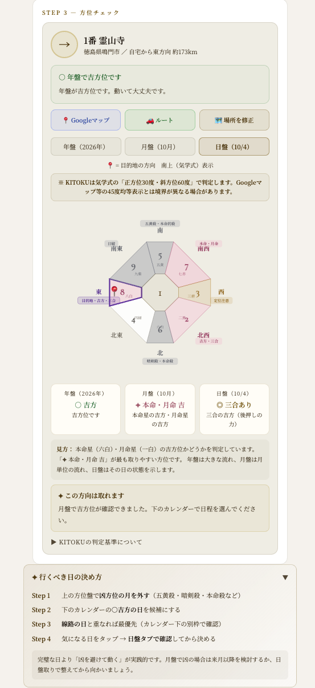
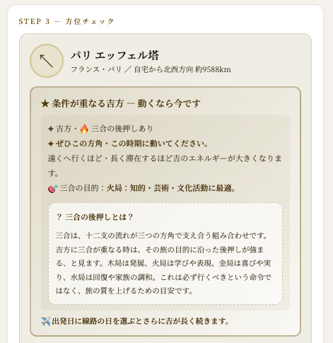
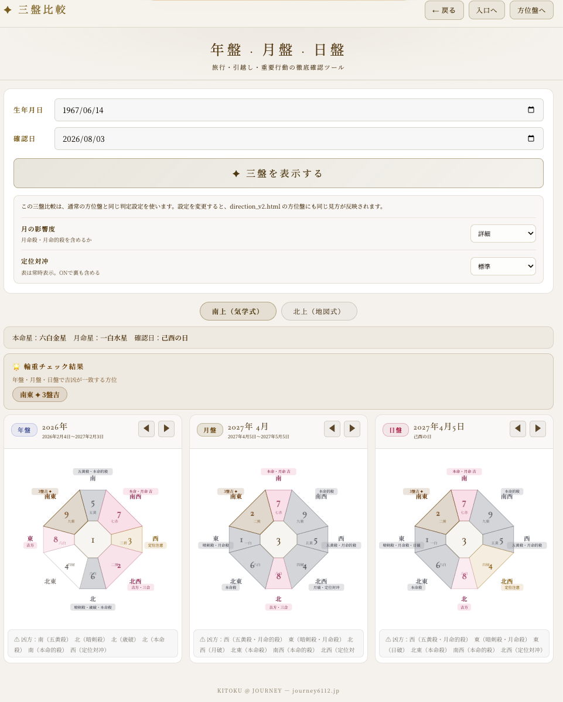

吉方位旅行・引越しで人生を変える
基礎編・応用編で「吉方位に行くと良い」ことは学んできました。第13回では、同じ吉方位でも、移動の距離・滞在期間・三合の後押しによって、効き方の質と持続期間が変わることを見ていきます。
気軽な処方箋と、人生の土台を動かす一手を分けて見る。
吉方位に重なる後押しの意味を理解する。
木局・火局・金局・水局の得意分野を旅に活かす。
1同じ「吉方位」でも、効き方の長さが違う
同じ吉方位でも、「どれくらい効くか」は移動した距離と滞在した期間で変わります。近い場所へ日帰りで行くのと、遠くへ引っ越して住み続けるのとでは、受け取る気の働き方が違って当然です。
| 行動 | 目安となる持続期間 |
|---|---|
| 日帰り・数日の旅行 | 数日〜数週間 |
| 月盤の吉方位で動く 出張・数週間の滞在など | 約5年 |
| 年盤の吉方位で引っ越す | 60年以上（一生涯に近い） |
2三合とは何か
十二支の中には、3つで1組になって力を強め合う組み合わせがあります。これを「三合（さんごう）」と呼びます。
| 三合のグループ | 対応する十二支 |
|---|---|
| 木局 | 亥・卯・未 |
| 火局 | 寅・午・戌 |
| 金局 | 巳・酉・丑 |
| 水局 | 申・子・辰 |
自分の吉方位が、この三合の流れに重なっているとき、その移動は後押しの力が強くなるとされています。

3三合が重なると、後押しの力が強くなる
三合が重なる方位への移動は、通常の吉方位よりも後押しの力が強い、というのがKITOKUの考え方です。
アプリでは、条件が重なる方位の中に「三合の目的」が表示されます。何を伸ばしたい旅なのか、どんな願いを持って向かうのかを考えるヒントになります。

4目的別・三合のブースター
三合の4つのグループには、それぞれ得意分野があります。「今、何を伸ばしたいか」で、意識する方位を選んでみてください。
| 三合 | 得意なこと | こんな時に |
|---|---|---|
| 木局 亥・卯・未 | 発展・成長・教育・営業活動 | 新しい挑戦を始めたい、営業成績を伸ばしたい時 |
| 火局 寅・午・戌 | 知的・芸術・文化活動、争いの調停 | 学び直したい、創作活動、揉め事を収めたい時 |
| 金局 巳・酉・丑 | 経済活動、恋愛・悦びの成就 | 収入を増やしたい、良いご縁が欲しい時 |
| 水局 申・子・辰 | 健康回復、家庭内の人間関係回復 | 体調を整えたい、家族との関係を見直したい時 |
5旅行と引越し、使い分けの目安
| 行動 | 見る盤 |
|---|---|
| 旅行 | 年盤・月盤どちらが吉方でもOK。気軽に試せる。 |
| 引越し・長期滞在 | 年盤・月盤の両方が吉方であることを大切に見る。 |
大きな決断ほど年盤を最優先で確認し、日々の小さな行動は月盤・日盤で調整する、というのが基本の考え方です。

6三合が「凶方位」に重なっている場合
ここまでは吉方位に三合が重なる話をしてきましたが、凶方位に三合が重なっている場合は、そちらへは近づかないのが基本です。三合は「後押しの力を強める」働きなので、良い方向にも悪い方向にも作用します。
7自分で選ぶために
旅行も引越しも、「開運のための我慢」ではありません。行きたい場所、住みたい場所を選ぶときに、ほんの少しだけ、方位という物差しを足してみる。それだけです。
三合が重なる機会に出会えたら、それは特別なボーナス。出会えなかったとしても、選んだ吉方位はどれも、ちゃんとあなたを後押ししてくれます。